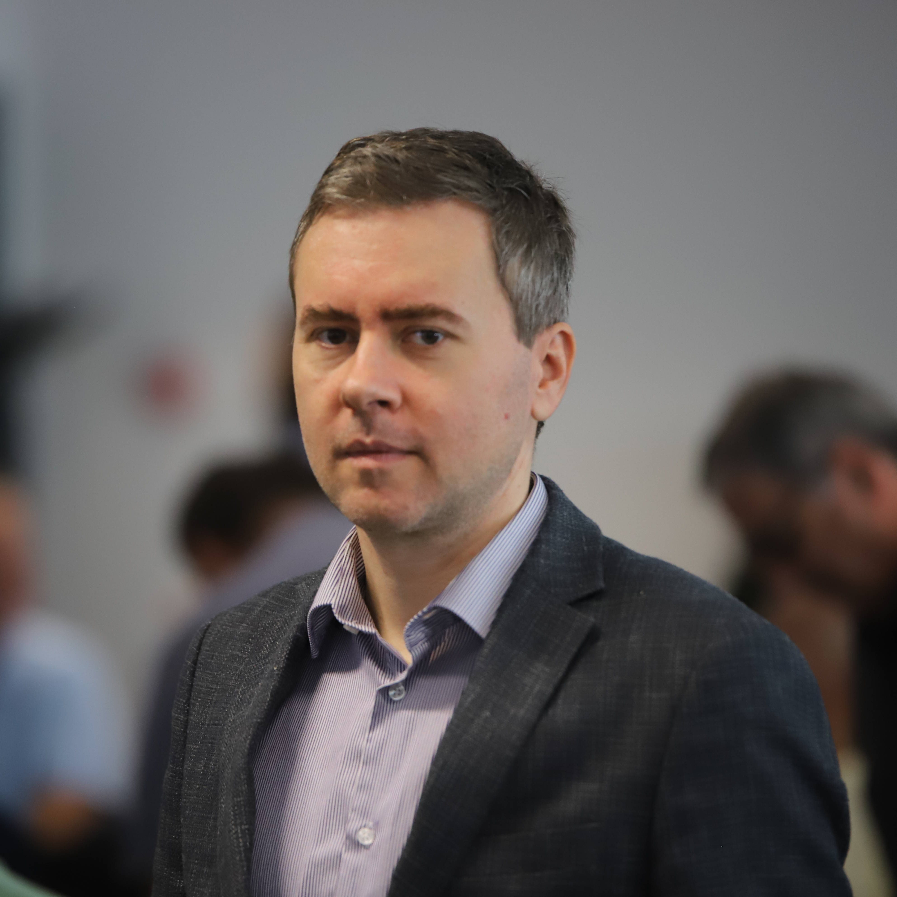

"If you can't explain it simply, you don't understand it well enough." - Albert Einstein
"If you don't make mistakes, you're doing it wrong. If you don't correct those mistakes, you're doing it really wrong. If you can't accept that you're mistaken, you're not doing it at all." - Richard Feynman
"1. Make the requirements less dumb. 2. Try and delete part of the process. 3. Simplify or optimize. 4. Accelerate cycle time. 5. Automate" - Elon Musk
About Me
Hardworking and curious electrical engineer with a wide array of experiences.
My love for learining, solving problems and my diverse background in engineering, coding and management make me versatile in any team.
For a deeper insight into my thought process and mindset, you can explore my selected readings.
My love for learining, solving problems and my diverse background in engineering, coding and management make me versatile in any team.
For a deeper insight into my thought process and mindset, you can explore my selected readings.
Career
Recent Experience (over the past five years):- Educator: I've specialized in teaching courses on microcontrollers, embedded systems, robotics, and automation.
- Regional Development: Played prominent role in the establishment and development of the Regional center of competence for mechanics and mechatronics.
Recent Education: Over the last year, I've delved into online education and coding,
focusing on Data Science, AI, ML, and the implementation of LLM.
Previous Endeavors:
Accumulated diverse experience in management, sales, electrical installation design, and research &
development.
Interests
I'm on the lookout for collaborations on projects that harness and implement emerging technologies.
I'm willing to dive deep and engage wholeheartedly in captivating ventures.
My preference is a hybrid work mode, but I'm open other options. If needed am ready to consider relocating to southern Germany, Austria, or Switzerland.
I'm willing to dive deep and engage wholeheartedly in captivating ventures.
My preference is a hybrid work mode, but I'm open other options. If needed am ready to consider relocating to southern Germany, Austria, or Switzerland.